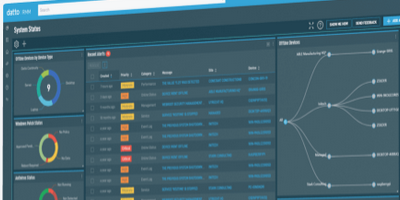

Using the DattoRMM API to export all Sites to a CSV file GitHub Repo
Pulls all Sites from a DattoRMM environment and export basic details in to CSV formatted file. Removes the system sites of Managed, OnDemand & Deleted Devices.
Gets the API URL, Key and Secret from .env or environment variables (example below)
Functions to interact with the DattoRMM API are in the dattormmapi.py Python file.
Main function to do the API requests and export to CSV is in the export_sites.py Python file.
Not much error/exception managment in this at the moment.